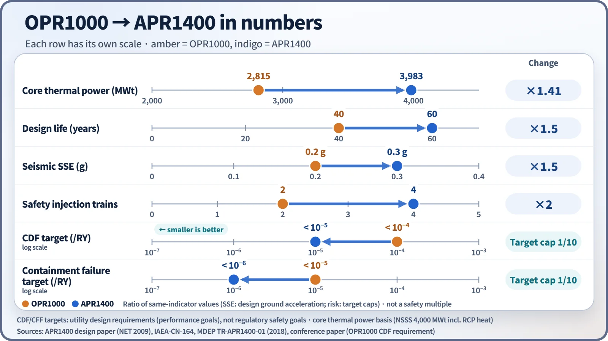
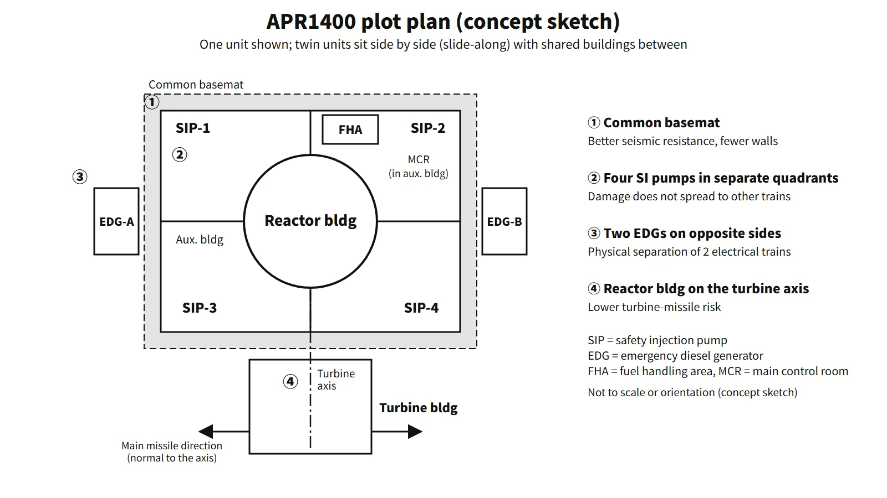

Policy, Economics & Reactor Types · C-PE-002
APR1400 Design Features — What Changed from the OPR1000 (Power, Design Life, Seismic, Safety Injection, MMIS, Severe Accidents)
How the 1,400 MWe evolutionary PWR moved from the OPR1000: 3,983 MWt, 60 years, SSE 0.3 g, four DVI trains, an in-containment water tank and a fully digital control room.
The APR1400 is a 1,400 MWe-class evolutionary pressurized water reactor developed on the basis of OPR1000 operating experience and the US System 80+ design, to a utility requirements document prepared with reference to the US EPRI ALWR requirements. It keeps the basic two-loop configuration and raises power, design life, seismic capacity, safety injection, instrumentation and control, and severe-accident response by one step each.
Development began in 1992; in the United States the design was certified in 2019 (10 CFR Part 52, Appendix F). It is an evolutionary design based on active safety systems, not a passive design.
Principle and mechanism
Requirements drive the design — the utility requirements
The APR1400's design features follow from the utility requirements set early in development. The main values of the utility requirements document are:
- Thermal power 4,000 MWt (NSSS), design life 60 years, SSE 0.3 g
- Core damage frequency (CDF) below 10⁻⁵/RY, containment failure frequency (CFF) below 10⁻⁶/RY
- Core thermal margin of 10 % or more, at least 30 minutes for operator action, SBO coping of 8 hours or more
- Availability 90 %, occupational dose below 1 man-Sv/RY, fewer than 0.8 unplanned trips per year
The design PSA results are CDF 2.25×10⁻⁶/RY and CFF 2.84×10⁻⁷/RY, inside the targets (developer's published PSA results). The CDF and CFF targets are utility performance goals and sit at a different level from regulatory safety goals.
Primary system — the same two loops, larger margins
The piping arrangement is the same as the OPR1000 (two loops, each with one hot leg, two cold legs, one SG and two RCPs). What changed is the margin.
- Hot-leg temperature 621 °F → 615 °F: more operating margin and less stress corrosion in SG tubes
- Larger pressurizer: absorbs transients up to Condition III without a reactor trip
- SGs: Alloy 690TT tubes (13,102 per SG), tube-plugging margin 8 → 10 %, more secondary-side inventory for a longer dry-out time
- Core of 241 assemblies (16×16 PLUS7), 93 CEAs, cycle of 18 months or more, thermal margin of 10 % or more
- The spring safety valves on top of the pressurizer and the separate SDS valves are combined into four POSRVs (set pressure 2,470 psia, 244.9 t/h each).
Safety injection — from two cold-leg trains to four direct vessel injection trains
The OPR1000 injects water from the RWT outside containment into the cold legs with two HPSI and two LPSI pumps. When the RWT empties, a recirculation actuation (RAS) is needed to switch suction to the containment sump. The APR1400 changed this as follows.
- Four mechanically independent trains: one SIP and one SIT per train, with the cross-connecting piping (common header) removed. Electrically there are two divisions (two EDGs, each supplying two SIPs).
- Direct vessel injection (DVI): water goes straight into the upper downcomer of the reactor vessel, reducing the path by which injection water spills out of a cold-leg break.
- SIT fluidic device: while the water level is above the standpipe, flow is high; below it, vortex resistance gives a low flow for a long time (about 200 seconds) → the large LPSI pumps are eliminated.
- IRWST: the refueling water is kept in an annular tank inside containment and serves as the single source for safety injection, containment spray and shutdown cooling. Spilled water returns to the IRWST, so there is no recirculation switchover, and the tank also serves as the quench tank for POSRV steam discharge and as the water source for reactor cavity flooding.
The shutdown cooling system was separated from safety injection, and its design pressure was raised to 900 psig against interfacing-system LOCA.
![Left: OPR1000 schematic with the refueling water tank outside containment, two HPSI and two LPSI pumps injecting into the cold legs, four SITs, break flow to the sump and a recirculation switch. Right: cutaway of the APR1400 containment with the in-containment refueling water storage tank, one of four safety injection pumps drawing from the IRWST and injecting directly into the reactor vessel upper downcomer, SITs with fluidic devices feeding the same-train DVI line, and break flow draining back to the IRWST so no suction switchover is needed](../../assets/images/concepts/c-pe-002-apr1400-design-features/fig1-eccs-water-path-comparison.webp)
Auxiliary feedwater and power supply
Auxiliary feedwater has two divisions, each with one 100 % motor-driven pump, one 100 % turbine-driven pump and a dedicated auxiliary feedwater storage tank. For emergency power, the original design has two EDGs (8,000 kW in the first units) plus a 7,200 kW AAC-DG per unit, while the US certified design (DC) has four EDGs plus a gas-turbine AAC.
Instrumentation and control — a fully digital MMIS
The main control room consists of a large display panel (LDP), operator workstations, soft controls, computer-based procedures and a safety console for essential safety functions. Safety I&C (PPS, CPCS, ESF-CCS) runs on a four-channel PLC platform, and a DPS on a different platform guards against software common-cause failure (two channels with 2-out-of-2 logic in the original design; four FPGA channels with 2-out-of-4 logic in the US DC).
Severe-accident response
Dedicated features were provided to meet severe-accident requirements for evolutionary LWRs (for example, SECY-93-087 in the United States): rapid depressurization through the POSRVs (to 250 psia or below), 30 PARs plus 10 igniters, the cavity flooding system (IRWST → HVT → cavity), a large reactor cavity (0.02 m²/MWt), and the emergency containment spray backup system (ECSBS).
What it means in a plant
The differences in numbers
| Item | OPR1000 | APR1400 |
|---|---|---|
| Core thermal power / electrical output | 2,815 MWt / 1,000 MWe class | 3,983 MWt (NSSS 4,000) / 1,400 MWe class |
| Design life | 40 years | 60 years |
| Seismic (SSE) | 0.2 g | 0.3 g |
| CDF / CFF targets | 10⁻⁴ / 10⁻⁵ | 10⁻⁵ / 10⁻⁶ |
| Safety injection | 2 trains (HPSI, LPSI), cold leg, RWT (outside) | 4 SIP trains, DVI, IRWST (inside), SIT + FD |
| Pressurizer overpressure protection | Safety valves + separate SDS | 4 POSRVs serving both |
| Main control room | Mainly analog | Fully digital MMIS |
| Dedicated severe-accident features | None (added later) | SDVS, PAR, CFS, ECSBS |

Differences within the APR1400 — later-unit improvements
Later APR1400 units added the following design improvements over the first units.
| Item | First units | Later units | Purpose |
|---|---|---|---|
| Aircraft impact assessment | Not applied (design predates the requirement) | Containment and auxiliary building walls 4.0 → 4.5 ft | Prevent perforation in a large aircraft impact |
| Severe-accident depressurization | POSRVs + manual switching of a three-way valve | Dedicated ERDV, two trains, added | Remove manual switching, prevent hydrogen build-up in the IRWST |
| Reactor cavity concrete | Basaltic + 1 ft of limestone | Limestone (LCS) only | Better coolability in MCCI |
| Batteries | Existing capacity | 24 h design | Extended SBO coping |
| Flooding protection | — | Watertight doors for EDGs, submersible drain pumps | External flooding |
The US DC differs in its four EDGs, gas-turbine AAC, FPGA-based DPS, single-unit layout and cooling towers.
Building layout
The APR1400 places twin units side by side (slide-along) with shared buildings between them. The reactor building and auxiliary building sit on a common basemat, which raises seismic resistance and reduces the walls between buildings. The auxiliary building surrounds the reactor building, and the four SIPs are placed one per quadrant so that fire, flooding or sabotage cannot spread between trains; the two EDGs are also separated in compartments on opposite sides. The turbine building is placed so that the reactor building lies on the extension of the turbine axis, reducing the turbine-missile risk. The equipment hatch (inside diameter 7.8 m) is sized for one-piece SG replacement.
Regulatory and design criteria
For example, the US NRC criteria that apply to evolutionary designs such as the APR1400:
| Basis | Key point |
|---|---|
| 10 CFR Part 52, Appendix F | US design certification of the APR1400 (2019) |
| SECY-93-087, 10 CFR 52.47(a)(23) | Severe-accident design of evolutionary LWRs |
| 10 CFR 50.150 | Aircraft impact assessment (new designs after 13 July 2009) |
Easily confused pairs
| APR1400 | APR+ | EU-APR | |
|---|---|---|---|
| Nature | Evolutionary, active safety systems | Successor to the APR1400, more passive features such as passive auxiliary feedwater | Version modified for the European requirements (EUR) |
| Electrical trains | 2 (2 EDGs) | 4 | 4 |
| Ex-vessel melt | CFS + large cavity | — | Core catcher |
"Four mechanical trains = four EDGs" is not true for the original APR1400 design, which has two EDGs; the US DC has four.
Key points at a glance
- Definition: a 1,400 MWe-class evolutionary PWR based on the OPR1000 and System 80+, built to utility requirements referencing the EPRI ALWR requirements (two loops, four RCPs).
- Requirements: 60 years, SSE 0.3 g, CDF < 10⁻⁵ and CFF < 10⁻⁶/RY, thermal margin ≥ 10 %, SBO 8 h.
- Primary system: 615 °F, larger pressurizer and SGs, Alloy 690TT, four POSRVs (safety valve and depressurization combined).
- Safety injection: four mechanical trains with DVI, SIT fluidic device (no LPSI), IRWST (no recirculation switchover; single water source, quench tank for POSRV discharge, cavity-flooding source, protection from external hazards).
- Power: two EDGs + AAC-DG (US DC: four EDGs + gas turbine).
- I&C: fully digital MMIS (LDP, soft controls, computerized procedures), four-channel PPS + DPS.
- Severe accidents: POSRV depressurization, PARs and igniters, CFS, ECSBS.
- Layout: common basemat, SI pumps in separate quadrants, turbine-axis orientation.
- Later units: aircraft impact walls 4.5 ft, ERDV, LCS cavity, 24 h batteries.
